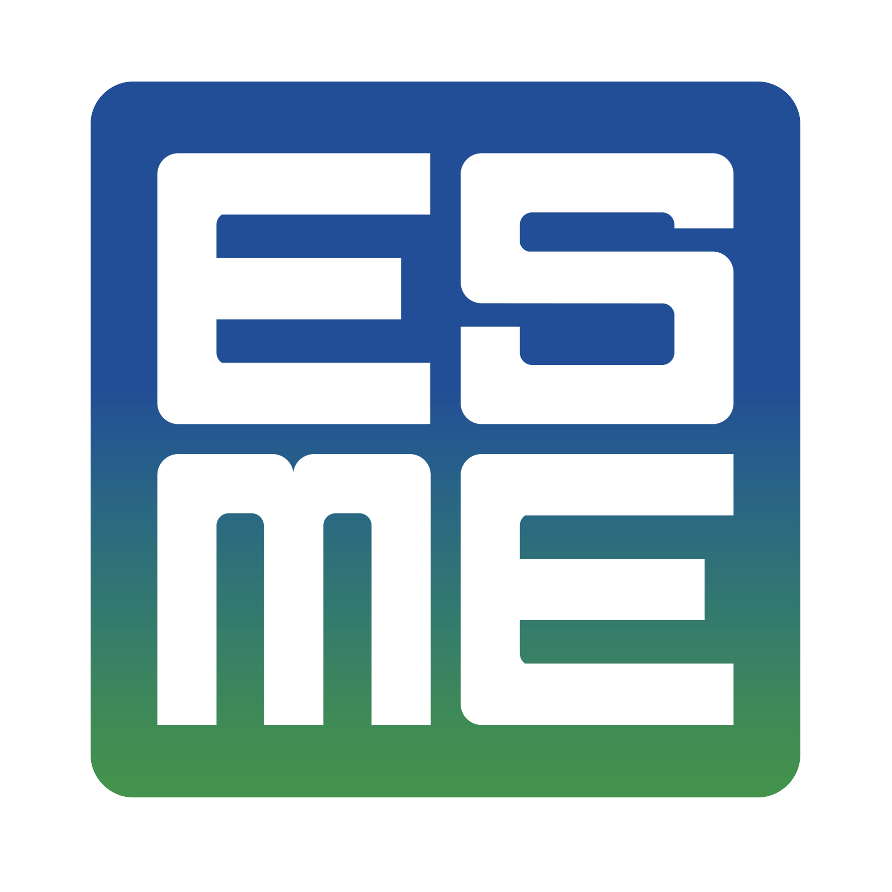

Formation
Parcours académique
2023 – 2024
MSc Robotics & Autonomous Systems
Heriot-Watt University · Édimbourg, Écosse
Double diplôme international en robotique et systèmes autonomes.
Programme intensif couvrant la robotique mécanique, la vision par ordinateur,
les interfaces homme-machine, les LLMs et les systèmes embarqués.
Enseignement 100% en anglais dans un environnement international.

2019 – 2024
Diplôme d'Ingénieure Généraliste
ESME · Majeure Systèmes Embarqués · Paris
Formation généraliste pluridisciplinaire sur 5 ans couvrant l'électronique
analogique, la programmation, l'énergie, la biotechnologie et les systèmes
embarqués. Présidente du Bureau des Arts. Projet de fin d'études en
partenariat avec l'industrie.
Projets réalisés
Drone de détection de personnes en mer
Prototypage d'une orthèse de rééducation de doigt connectée
Conception théorique d'un gant kinésithérapeutique
🎓
Formation continue
Formations réalisées
Développement professionnel
Formations techniques et professionnelles suivies dans le cadre de mon activité
au sein de l'entreprise ECM.
Formations internes ECM
R&D avec approche biomimétisme, TRIZ, analogie et brainstorming structuré etc.
Gestion de projets R&D éligibles au CIR (moyenne & petite entreprise)
Formations externes (ECM, animé par organisme extérieur)
HTML/CSS, Développement Web
PHP, JavaScript débutant et avancé
ReactJS
🏆
Certifications
TOEIC 980
Compétences certifiées
TOEIC score 980 – anglais courant, niveau professionnel certifié.
Capacité à travailler en anglais dans un contexte technique international.
🔒
Habilitations
Secret Défense
Capacité à travailler sur projets sensibles
Habilitation Secret Défense permettant de travailler sur des projets
sensibles dans les secteurs Défense et Aérospatial, avec accès à des
informations et équipements classifiés.